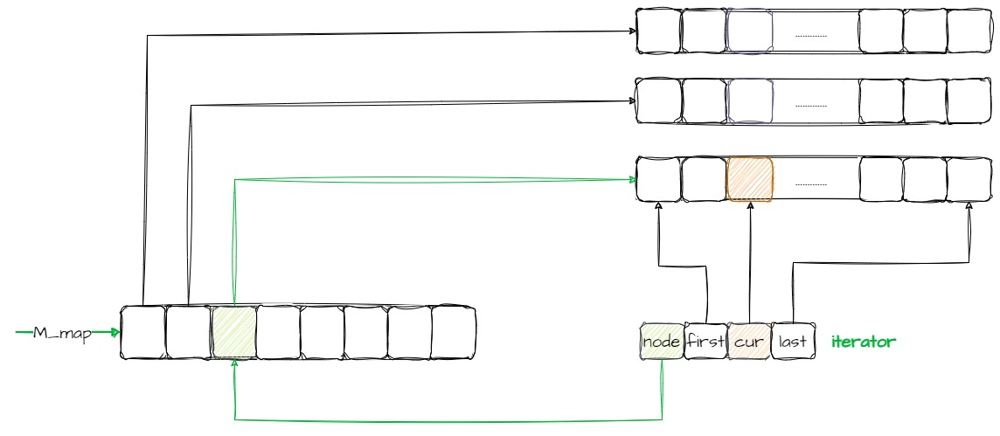

Iterator¶
struct _Deque_iterator {
typedef _Deque_iterator<_Tp, _Tp&, _Tp*> iterator;
typedef _Deque_iterator<_Tp, const _Tp&, const _Tp*> const_iterator;
static size_t _S_buffer_size() { return __deque_buf_size(sizeof(_Tp)); }
typedef random_access_iterator_tag iterator_category;
typedef _Tp value_type;
typedef _Ptr pointer;
typedef _Ref reference;
typedef size_t size_type;
typedef ptrdiff_t difference_type;
typedef _Tp** _Map_pointer;
typedef _Deque_iterator _Self;
DataImplementation¶
_Tp* _M_cur;
_Tp* _M_first;
_Tp* _M_last;
_Map_pointer _M_node;
node: 指向此迭代器所指向的缓冲区
cur: 指向此迭代器所指向的缓冲区的当前元素(current）
first: 指向此迭代器所指向的缓冲区的头
last: 指向此迭代器所指向的缓冲区的尾
Contrustor¶
_Deque_iterator(_Tp* __x, _Map_pointer __y)
: _M_cur(__x), _M_first(*__y),
_M_last(*__y + _S_buffer_size()), _M_node(__y) {}
_Deque_iterator() : _M_cur(0), _M_first(0), _M_last(0), _M_node(0) {}
_Deque_iterator(const iterator& __x)
: _M_cur(__x._M_cur), _M_first(__x._M_first),
_M_last(__x._M_last), _M_node(__x._M_node) {}
主要是数据结构的初始化
operator*¶
返回_M_cur指针所指向的内容
reference operator*() const { return *_M_cur; }
operator->¶
返回_M_cur
pointer operator->() const { return _M_cur; }
operator-¶
difference_type operator-(const _Self& __x) const {
return difference_type(_S_buffer_size()) * (_M_node - __x._M_node - 1) +
(_M_cur - _M_first) + (__x._M_last - __x._M_cur);
}
1 获取map中第二节点的空间，在本示例中x是第一个节点，self是第三个节点，要获取x与self之间的第二个节点的空间
difference_type(_S_buffer_size()) * (_M_node - __x._M_node - 1)
2 获取当前节点所使用的空间cur- first
(_M_cur - _M_first)
3 获取x节点未使用的空间last-cur
(__x._M_last - __x._M_cur)
operator++¶
前置++，返回对象的引用，首先++操作，然后判断当前的指针cur是不是已经处于存储空间的末端了（last），
如果处于末端，就向map重新申请一个node节点,并将cur指向first
_Self& operator++() {
++_M_cur;
if (_M_cur == _M_last) {
_M_set_node(_M_node + 1);
_M_cur = _M_first;
}
return *this;
}
后置++，返回对象本身，先将this保存到tmp中，然后调用前置++，将cur进行移动，并返回tmp
_Self operator++(int) {
_Self __tmp = *this;
++*this;
return __tmp;
}
operator–¶
前置–
_Self& operator--() {
if (_M_cur == _M_first) {
_M_set_node(_M_node - 1);
_M_cur = _M_last;
}
--_M_cur;
return *this;
}
后置–
_Self operator--(int) {
_Self __tmp = *this;
--*this;
return __tmp;
}
operator+=¶
_Self& operator+=(difference_type __n)
{
difference_type __offset = __n + (_M_cur - _M_first);
if (__offset >= 0 && __offset < difference_type(_S_buffer_size()))
_M_cur += __n;
else {
difference_type __node_offset =
__offset > 0 ? __offset / difference_type(_S_buffer_size())
: -difference_type((-__offset - 1) / _S_buffer_size()) - 1;
_M_set_node(_M_node + __node_offset);
_M_cur = _M_first +
(__offset - __node_offset * difference_type(_S_buffer_size()));
}
return *this;
}
这里__n可以是正数也可以是负数.
__offset是表示迭代器指针需要偏移的量
当需要偏移的量__offset的值在当前的node节点空间内，直接让 _M_cur + __n 即可
当需要偏移量__offset的值超出了当前node节点的空间，需要占用另外的node节点
首先需要计算出需要的node节点数
__offset / difference_type(_S_buffer_size())
当需要偏移量为负数的时候，即需要将指针向后移动
-difference_type((-__offset - 1) / _S_buffer_size()) - 1
operator+¶
主要调用operatior+=来实现
_Self operator+(difference_type __n) const
{
_Self __tmp = *this;
return __tmp += __n;
}
operator-=¶
_Self& operator-=(difference_type __n) { return *this += -__n; }
operator-¶
_Self operator-(difference_type __n) const {
_Self __tmp = *this;
return __tmp -= __n;
}
operator[]¶
reference operator[](difference_type __n) const { return *(*this + __n); }
operator==¶
bool operator==(const _Self& __x) const { return _M_cur == __x._M_cur; }
operator!=¶
bool operator!=(const _Self& __x) const { return !(*this == __x); }
operator<¶
bool operator<(const _Self& __x) const {
return (_M_node == __x._M_node) ?
(_M_cur < __x._M_cur) : (_M_node < __x._M_node);
}
operator>¶
bool operator>(const _Self& __x) const { return __x < *this; }
operator<=¶
bool operator<=(const _Self& __x) const { return !(__x < *this); }
operator>=¶
bool operator>=(const _Self& __x) const { return !(*this < __x); }